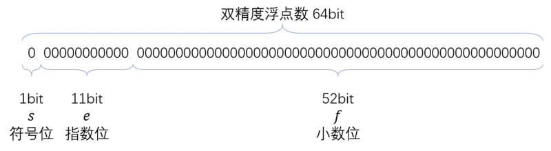

前言
我们的意识中0.1 + 0.2 === 0.3是成立的，但在计算机语言中，不一定哟。
因为在计算机的存储方式是二进制且有位数限制的。上面数字，均为十进制的，需要进行转换，在此过程中如果有超出限制的字符，需要截取，这就存在误差了。下面来看一下整个计算过程。
要搞懂这些，需要知道基础知识:
- 十进制和二进制间的转换
- 双精度小数的存储
基础知识
十进制和二进制间的转换
十进制转二进制
秘诀:
整数除以2取余数倒叙；
小数乘以2取整数正序。
以十进制数123.45转换成二进制为例：
整数 $123$
$123 / 2 = 61 余 1$
$61 / 2 = 30 余 1$
$30 / 2 = 15 余 0$
$15 / 2 = 7 余 1$
$7 / 2 = 3 余 1$
$3 / 2 = 1 余 1$
$1 / 2 = 0 余 1$
倒叙得 $ 1111011 $
小数 $0.45$
$0.45 * 2 = 0.9 整 0$
$0.9 * 2 = 1.8 整 1$
$0.8 * 2 = 1.6 整 1$
$0.6 * 2 = 1.2 整 1$
$0.2 * 2 = 0.4 整 0$
$0.4 * 2 = 0.8 整 0$
$0.8 * 2 = 1.6 整 1$
$0.6 * 2 = 1.2 整 1$
循环下去了…
正序得 $ 01110011001100(1100循环) $
所以结果是: $$ (123.45)_{10} = (1111011.01110011001100…)_2 $$
二进制转十进制
秘诀:
整数数值乘以2的正幂次依次相加
小数数值乘以2的负幂次依次相加
以二进制数1011.01101转换成十进制为例：
整数 $ 1011 $
$ = 1 * 2^3 + 0 * 2^2 + 1 * 2^1 + 1 * 2^0 $
$ = 8 + 0 + 2 + 1 $
$ = 11 $
小数 $ 0.01101 $
$ = 0 * 2^{-1} + 1 * 2^{-2} + 1 * 2^{-3} + 0 * 2^{-4} + 1 * 2^{-5}$
$ = 0.25 + 0.125 + 0.03125 $
$ = 0.40625 $
所以
$$ (1011.01101){2} = (11.40625){10} $$
双精度的小数储存

需要将小数转化为科学计算法 $ 0.000110011 = 1.10011… * e(^-4) $
- 0-51位 - 小数位
记录科学计算法中的小数，一共52个字符，超出后1进0舍- 52-62位 - 指数位
记录科学计算法的指数，$ 2^{11-1} - 1 - 指数 $，转换为二进制- 63位 - 符号位
0表示正数，1表示负数
0.1 + 0.2 等式计算
转换成二进制
0.1 -> 0.000110011001100…(1100循环)
0.2 -> 0.00110011001100…(1100循环)
二进制转换为科学技术法
$$ 0.1 = 1.100110011… * 2^{-4} $$
存储
- 符号位，正数所以是0
- 指数位，指数是-4，所以是$(11111111)_2 - 4 = 11111011$
- 小数位，100110011001100110011001100110011001100110011001100110
只能存52位，所以53位的遵循0舍1进，现在53位是1，进一位得
$$ 1001100110011001100110011001100110011001100110011010 $$
得到0.1的存储值是
$$ 0.1 = 0 ～ 01111111011 ～ 1001100110011001100110011001100110011001100110011010 $$
同理0.2的存储值是
$$ 0.2 = 0 ～ 01111111100 ～ 1001100110011001100110011001100110011001100110011010 $$
相加
小数相加时，保持指数位一致，所以有
$0.1 = 0.00011001100110011001100110011001100110011001100110011010$
$0.2 = 0.0011001100110011001100110011001100110011001100110011010$
$相加 = 0.0100110011001100110011001100110011001100110011001100111$
同理，小数位限制52，第53位是1，进一，得
0.010011001100110011001100110011001100110011001100110100
$$2^{-2} + 2^{-5} + 2^{-6} + 2^{-9} + 2^{-10} … + + 2^{-47} + 2^{-48} + 2^{-50}$$
$$ = 0.300000000000000044408 $$
由于精度保留17位得 $0.30000000000000004 $
总结
数字在计算机存储中，是需要转换为二进制的，而且存储位数有限，所以可能会导致精度丢失，产生bug。
所以在数值计算时，一定要考虑这一点。
问题来了
既然知道0.1 + 0.2 !== 0.3
那么1.1 + 0.2 === 1.3成立吗?